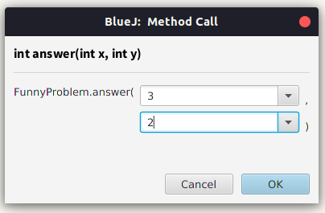
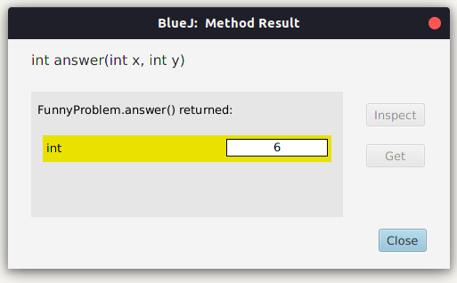
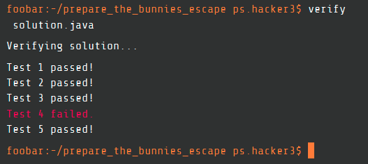

Hey there! In my previous post I wrote about my Google FooBar experience. I recommend you to read that post before you continue with this one.
This post will explain how I managed to extract hidden test cases from Google FooBar. Note that I had reported the bug through the feedback command via the FooBar terminal. Although I did not receive any response from Google for that report, this flaw has now been fixed.
A mild confusion
I discovered an important fact about FooBar’s test case evaluations when I was solving the 2nd problem of the 2nd level. Upon finally completing the code for the solution, I used the verify command to check it. To my dismay, only the first test case passed. I went through my solution again to find any logical errors, but couldn’t find any. In my opinion, the program should have worked.
I had already discovered that the first two test cases on which my solution was evaluated were the same as the ones given in the examples. And I had verified that my solution worked for the two example cases before I submitted the code. That was weird. At least the first two cases should have passed! Nevertheless, I decided to test the program on the example cases once again.
BlueJ <3
I think that fact that I used BlueJ (it’s an awesome Java IDE, BTW) was instrumental in helping me unravel the mystery. BlueJ has the option of calling static functions of a class through a popup menu obtained by right clicking the name of the class. This opens a dialog box that asks for the parameters to be passed to the function.  When the function completes its execution, another dialog box pops up which contains the return value of the function. 
The same mild confusion, now 17% extra for free
So I recompiled the same program (not a very sane idea, I know, but wait) and called the answer function directly from BlueJ’s fantastic UI, with the input being the first example test case (yes, the one that was already giving me the correct answer on FooBar’s evaluation - not a very sane idea again, but wait).
I tell you, in this world, being a little crazy helps to keep you sane. - Zsa Zsa Gabor
I got 1 as the output, which was the correct answer. Then, I again called the answer function with the input being the second example test case. (Note: No recompiling. I just closed the output window of the first example, and called the function again.)
Boom! This time, I got 7 as the output. The correct answer was supposed to be 6. That was funny. I remember I got 6 as the output the last time I passed the same parameters to the same code. Just to confirm it, I recompiled the code, called the function with the second example case, and found the output to be 6.
Puzzle solved!
At this moment, I knew that my code was correct. It was Java that was acting weirdly, or so I tended to believe. I was almost ready to post this as a question on StackOverflow, when I decided to look at my code again.
And here comes the big moment. I realized that the value that the answer function was supposed to return, was stored in a static variable. (Don’t judge me. I have now learnt that it is a bad practice.) Thus, the variable was conserved across multiple calls of the answer function on the same instance of the Java Virtual Machine. And I had never explicitly set the variable to 0. I just kept on increasing the value of the variable (in another static function - which did the calculations), and returned it when the calculations were over. Thus, when I called the function the second time, the variable still contained its previous value. Hence, I got 7 = 1+6 as my answer for the second test case.
Recompiling a program in BlueJ resets the Java Virtual Machine. Hence, the static variables are restored to their initial values. This is why I got the correct answer when I ran the program after recompiling it.
Of course, I solved the issue by simply putting a statement to reset the variable to 0 before performing the calculations. With this modification, my program passed all the test cases.
The important fact that I learnt here is that Google was calling the answer function on the same instance of JVM for all the test cases.
Lost in a maze
For the 2nd problem of level 3, I had to find the length of the shortest path from the bottom-right corner to the top-left corner of a boolean matrix. false represented a block where we could move, and true represented a piece of wall. Also, I was allowed to remove at most one wall from the maze.
I didn’t know about BFS/DFS back then. (I didn’t know about any standard algorithms, in fact. :'( ) As a result, I coded up a very dirty solution (must’ve been DFS, only I didn’t know it was called so). And it worked. Well, almost! It passed 4/5 test cases.  I tried hard to find a bug or an edge case that I hadn’t considered, but I couldn’t. So I decided to find an altogether different approach to solve the problem. While thinking of a better solution to the problem, an evil idea struck me.
I want to hack NASA Google with HTML Binary Code
The fact that the JVM was the same across evaluations implied that I could share data among different runs of the program. So I did two things :
- Create a static variable named
testCasethat is incremented every time theanswerfunction is called. This will contain the serial number of the test case that is being currently evaluated. - Store the data of the current test case into other static variables. This could be :
- a single variable - in which case the data of one test case will be available only to the next test case, or
- an array - in which case the data of one test case will be available to all subsequent test cases.
Okay, so now I have the data of the previous test case stored in a static variable.
If you want to succeed, double your failure rate. - Thomas Watson
Idea
Convert the data of the previous test case into binary form. If the number at the ith position is 1, run the program as it is supposed to. If it is 0, return a garbage value so that the current test case fails.
Implementation
I stored the matrix of the 4th test case in a static variable. When inside the 5th test case evaluation, I used the above mentioned idea to return the correct/incorrect output.
I first converted the length of the matrix to a binary string and checked for the character at index i (I had to manually increment the value of i after every submission). If this bit was 0, I returned -1, otherwise I let the program run as it was supposed to. On observing the results, if only the 4th test case failed, the inference drawn was that the bit at ith index was 1. If both the 4th and the 5th test cases failed, the inference drawn was that the bit at ith index was 0. When the index grew bigger than the length of the binary string, a Runtime Error was thrown instead of a Wrong Answer. This way, I found the binary representation of the length of the matrix.
I repeated the process for the breadth, and then for the entire matrix (except, I didn’t…).
A far more unheroic, but faster way
I had found out almost half the matrix when I realized that instead of obtaining the entire matrix, I could just guess the answer. Since I had to find the length of shortest path, the answer would satisfy:
So for all the test cases, I would let the program run normally, while for the 4th test case, I would return a custom value. I started with length+breadth-1, and kept incrementing it until the 4th test case passed too. (Okay fine, a very despicable way to pass a test case, indeed. This is probably why I didn’t whine when I didn’t hear from Google - I hadn’t completely solved this problem.)
Conclusion
The binary conversion method, although a long procedure, could be successfully used to extract hidden test cases from Google FooBar - much more easily for problems which have a few int values as the input. However, it requires that at least one test case succeeding the failing test case, must pass.
Although finding hidden test cases isn’t that much of a benefit (as it’ll only help if the program fails for some edge cases), they are “hidden” for a reason, and it would be better if they remain so! I’m glad that Google has now fixed the issue.